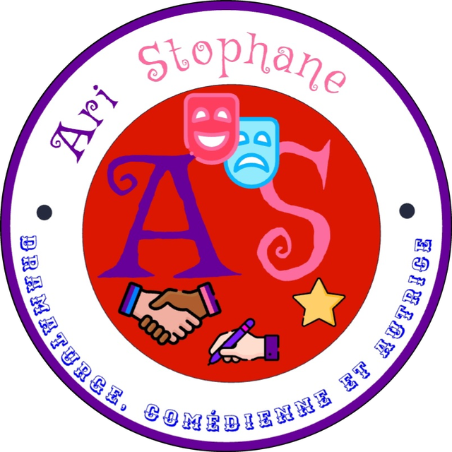

Drame
Le Dernier Rappel
- 3 actes
- 1 h 30
Un théâtre doit fermer ce soir. Une comédienne refuse de quitter la scène avant le dernier rappel.

Ari StophaneAri Stophane écrit pour la scène et pour la page.
Dramaturge, comédienne et autrice, elle passe du plateau au cahier avec la même envie : raconter des personnages qui font rire, qui émeuvent ou qui dérangent.
Ses pièces se jouent à voix haute, ses histoires se lisent à voix basse. Sur ce site, vous pouvez lire les unes et les autres, dire ce que vous en avez pensé et lui souffler les idées de la prochaine.
Le public fait partie de la troupe : chaque avis et chaque idée peuvent changer une réplique, un personnage, voire une fin.
Des pièces à jouer, à lire ou à monter.
Elle connaît le plateau de l'intérieur, et ça s'entend dans ses dialogues.
Des nouvelles et des histoires à lire où et quand on veut.
Ari Stophane n'est pas mon vrai nom : c'est un pseudo, et il a une histoire.
C'est durant les grandes vacances de 2022 que deux de mes amies me l'ont trouvé. Elles avaient envie que je m'inscrive sur un réseau dédié à l'écriture. J'étais d'accord, mais je n'arrivais pas à me trouver de nom de plume.
Mes amies ont alors repensé à l'année 2021/2022, où j'étais en troisième et où j'ai joué une pièce d'Aristophane (s'ouvre dans un nouvel onglet), un dramaturge athénien qui a vécu au Ve siècle avant notre ère. Cette pièce s'intitule L'Assemblée des femmes (s'ouvre dans un nouvel onglet) et elle a été écrite en 392 avant notre ère.
Mes amies ont donc décidé de jouer avec son nom et m'ont appelée « Ari Stophane ».
Lire L'Assemblée des femmes (s'ouvre dans un nouvel onglet)392 avant notre ère
Aristophane écrit L'Assemblée des femmes.
2021 / 2022
Je joue cette pièce sur scène.
Été 2022
Mes amies jouent avec le nom d'Aristophane et me baptisent Ari Stophane.
Chaque couleur et chaque symbole de mon logo a une signification. Survolez ou touchez un élément pour voir où il se cache.
Il évoque le mystère qui plane sur certaines de mes pièces, notamment celles qui tournent autour d'une enquête.
Il incarne la passion que m'inspire cet art.
Il symbolise la romance, non pas au sens de l'amour, mais dans celui du récit : chacune de mes pièces est un roman adapté à la scène.
Il traduit la vérité. J'écris en effet la plupart de mes pièces sur des sujets actuels que je veux faire comprendre au monde.
Il reflète la perfection que j'aimerais atteindre avec mes pièces, même si je sais très bien que rien n'est jamais complètement parfait.
Il exprime la joie que je veux faire ressentir à travers mes pièces et mes histoires.
Elle rappelle que je suis à la fois dramaturge et écrivaine.
Elle annonce l'apparition d'un nouvel astre dans le ciel littéraire : une voix pas encore connue, mais qui commence à briller. Une jolie métaphore pour raconter mes débuts.
Elles illustrent le pacte de relation, de confiance et de dialogue que je noue avec mon public, les personnes qui lisent mes histoires.
Celui de la comédie et celui de la tragédie sont l'emblème de l'art dramatique.
Choisissez votre place : chaque billet ouvre un extrait.
Un théâtre doit fermer ce soir. Une comédienne refuse de quitter la scène avant le dernier rappel.
Pendant un bal costumé, chaque invité échange son masque contre celui d'un autre. Le lendemain, plus personne ne sait qui il est censé être.
Trois inconnus restent enfermés dans un théâtre après la dernière représentation. Ils découvrent qu'ils jouent la même pièce, mais pas le même rôle.
Le rideau n'est pas encore levé. Vous avez peut-être l'idée qui manque.
Proposer une idéeDes lectures courtes, à emporter partout.
Nouvelle
Chaque matin, la même valise attend sur le quai numéro trois. Personne ne sait à qui elle appartient, sauf le chef de gare, qui préfère se taire.
Conte
Quand la pluie tombe sur le vieux théâtre, les fauteuils se mettent à murmurer. Ils racontent les pièces qu'ils ont entendues, et surtout celles qu'on ne leur a jamais jouées.
Nouvelle fantastique
Une comédienne reçoit chaque semaine une lettre écrite de sa propre main. Elle est datée du lendemain, et elle commence toujours par : « Ne va pas au théâtre ce soir. »
Une nouvelle page se prépare. Un personnage, un lieu, un premier mot : la suite est peut-être entre vos mains.
Proposer une idéeUne pièce vue, une histoire lue ? Racontez ce que vous en avez pensé : ce qui vous a fait rire, frissonner ou décrocher. Chaque retour aide l'écriture à avancer.
Cliquez sur les étoiles pour applaudir.
Donner mon avis (s'ouvre dans un nouvel onglet)Un personnage, un lieu, une réplique, un « et si… » : glissez votre idée dans la boîte du souffleur. Elle pourrait servir de point de départ à une prochaine pièce ou à une nouvelle histoire.
Proposer une idée (s'ouvre dans un nouvel onglet)La scène est vide. Une seule lampe reste allumée, au centre.
ODILE. On éteint tout, alors ?
LE RÉGISSEUR. C'est l'ordre de la mairie.
ODILE. Alors éteignez-moi aussi. Parce que moi, je ne descends pas.
Elle s'assoit sur le bord du plateau, les jambes dans le vide. Le régisseur hésite, puis pose la clé sur la table.
Le lendemain matin. Des masques jonchent le salon.
HORTENSE. Je suis sûre que ce masque est le mien.
VICTOR. Il est doré, il a une plume. Le vôtre était noir.
HORTENSE. Le mien était noir hier. Aujourd'hui, je suis quelqu'un de plus lumineux.
Minuit sonne quelque part. Les trois personnages se regardent.
LUCE. Vous aussi, vous avez reçu un texte à apprendre ?
MARC. Oui. Mais le mien est le rôle du héros.
LUCE. Le mien aussi.
Un silence. Au loin, quelqu'un applaudit.
Chaque matin, la même valise attendait sur le quai numéro trois. Brune, cabossée, une étiquette effacée par des années de soleil. Les voyageurs la contournaient sans jamais la regarder.
Seul le chef de gare savait. Chaque soir, il la rangeait dans son bureau. Chaque matin, il la remettait à sa place, exactement au même endroit, et il attendait que quelqu'un vienne la chercher.
Quand la pluie tombe sur le vieux théâtre, les fauteuils se mettent à murmurer. Ils se racontent les pièces qu'ils ont entendues, les rires du premier rang et les silences du balcon.
Mais les plus bavards parlent des pièces qu'on ne leur a jamais jouées. Et il suffit qu'une petite fille se glisse derrière le rideau, un soir d'orage, pour qu'elles commencent à s'écrire toutes seules.
La première lettre est arrivée un mardi. Je reconnaissais l'écriture, les boucles trop larges, le « t » qui n'est jamais barré jusqu'au bout. C'était la mienne.
Elle commençait par : « Ne va pas au théâtre ce soir. » Elle était datée du lendemain. Je l'ai relue trois fois, puis j'ai mis mon manteau, parce que j'avais une représentation.